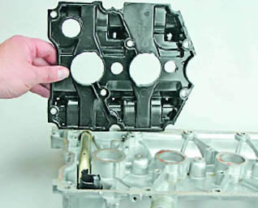

Крышка головки блока цилиндров снятие, очистка маслоотражателя и установка
Снятие
1. Снимаем воздушный фильтр.
2. Снимаем декоративную накладку двигателя.
3. Снимаем катушки зажигания.
4. Снимаем впускной модуль.
5. Торцовым ключом на 8 мм отворачиваем 15 болтов крепления крышки головки блока цилиндров и снимаем крышку.
6. Снимаем крышку.
При необходимости ключом на 10 мм отворачиваем болт крепления и снимаем с крышки головки блока кронштейн крепления колодоку жгута проводов форсунок и катушек зажигания. Также при необходимости ослабляем хомуты и отсоединяем от крышки шланги.
Промывка
1. Ключом на 8 мм отворачиваем шесть болтов крепления маслоотражателя.
2. Шлицевой отверткой отжимаем фиксаторы маслозаливной горловины
3. Снимаем маслоотражатель с крышки головки блока цилиндров.

5. Промываем снятые детали в керосине, протираем чистой тканью.
6. Собираем крышку головки блока в обратной последовательности. Болты затягиваем моментом 1,9-4,6 Н-м (0,2-0,5 кгс-м)
Не забудьте установить под головки болтов стопорные шайбы.
Установка
1. Очищаем привалочные плоскости крышки и корпуса подшипников от остатков герметика, обезжириваем их уайт-спиритом.
2. Наносим на привалочную плоскость корпуса подшипников тонкий слой термостойкого герметика Локтайт-574 или аналогичного в соответствии с показанной на фотографии схемой.

При ремонте двигателя нельзя применять герметик с большим содержанием силикона (соединений кремния), пары которого могут попасть через систему вентиляции картера в цилиндры и далее в выпускной тракт. Следует использовать герметик, на упаковке которого специально указано, что он безопасен для датчика концентрации кислорода.
3. Устанавливаем крышку на место. Болты крепления крышки заворачиваем в направлении от середины краям до прижатия крышки к корпусу подшипников. Окончательно болты затягиваем моментом 1,9-4,6 П-м (0,2-0,5 кгс-м).
4. Устанавливаем детали в последовательности, обратной снятию.